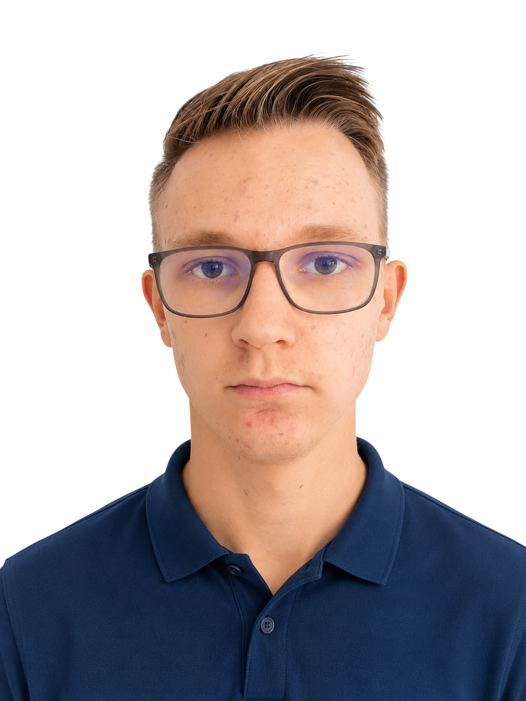

Mon parcours
À propos de moi
Titulaire d'un Baccalauréat Général (spécialités NSI & SI), je poursuis actuellement mes études en BTS SIO (Services Informatiques aux Organisations), option SLAM au Pôle supérieur Saint-Denis à Annonay.
Curieux et rigoureux, j'aime comprendre le fonctionnement sous-jacent des systèmes, concevoir des algorithmes et relever des défis techniques comme l'organisation de CTF (Capture The Flag).
| Période | Établissement | Classe |
|---|---|---|
| 2026 → aujourd'hui | Campus Saint-Denis | BTS SIO |
| 2023-2026 | Lycée Saint-Denis | Seconde → terminale |
| 2019-2023 | Collège Saint-Jean-Baptiste | Sixième → troisième |
Langues
- Anglais : niveau B2+
- Espagnol : niveau B2
